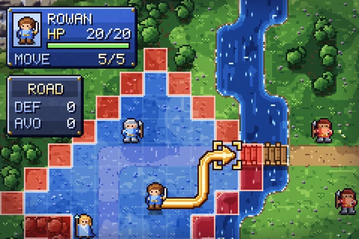
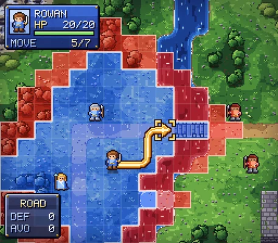
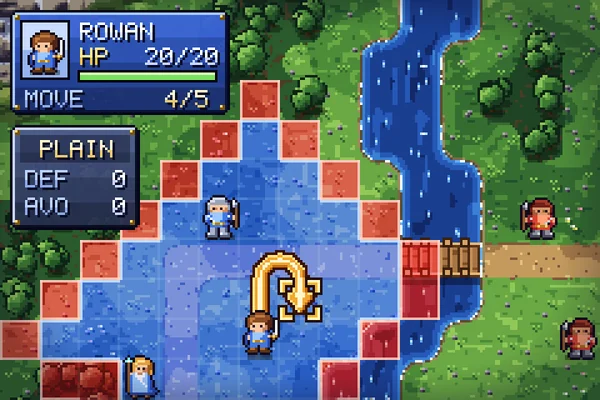
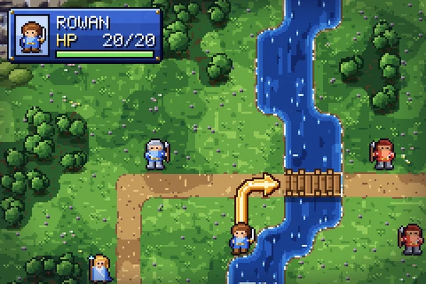

Tactics map kit
Move on a grid, see what can hit you, preview the fight, watch the numbers.
Open in the basketShow where a unit can walk and draw its path. A complete starter game you can extend.
What it does
Select a unit on a tile map to see every tile it can reach (blue, terrain-cost aware) and every tile it can strike (red); a segmented arrow follows the cursor along the cheapest path and the unit walks it tile by tile on confirm.
Moments

Play from here
Play from here
Play from here
Play from hereTake it home
grid-range-path.js) and its README.# Add Grid movement range + path arrow to my game Add the game element below to MY existing game, which you have not seen. It is a finished module file given with this prompt: - `grid-range-path.js` (one global, `GameDNA_GridRange`), API reference `grid-range-path.README.md` README example names are placeholders. ## Shared premises 1. **Include each module file verbatim; never edit it.** Load it with its own `<script src>` before the game's script, or paste it unchanged into its own `<script>` tag. If a module seems to need a change, adapt my game around it and tell me. 2. **Resolution:** keep my game's native resolution and integer scaling as they are. Call module draw functions on my 2D context inside the same transform as my sprites (one module pixel = one game pixel), and keep my game's own image-smoothing setting (off for pixel art, on for smooth or HD games; never switch it). 3. **Time:** drive every module from one fixed 60 Hz step (1000 / 60 ms). If my loop uses variable delta time, accumulate it and run whole steps (at most 250 ms per frame). Turn/phase logic stays mine; modules still update every step to animate. 4. **Coordinates:** native screen pixels (world minus camera) unless a section says tiles. 5. **Art and names:** anything new you draw or name is original (no real game, character, place or brand names); English UI text; do not restyle my game. 6. **Hook, don't replace:** add calls or change bodies; never delete or rename a function.Open the whole prompt
Works well with
Move on a grid, see what can hit you, preview the fight, watch the numbers.
Open in the basket